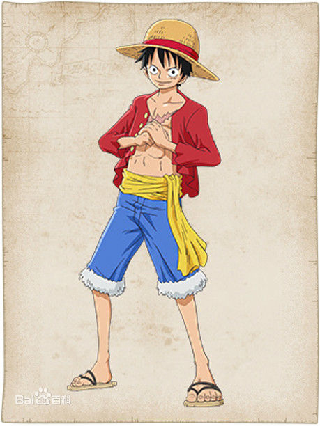
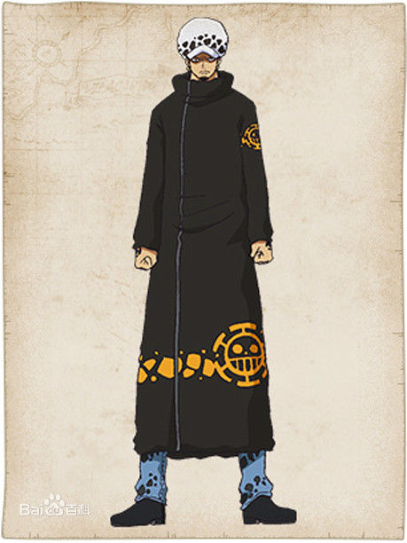
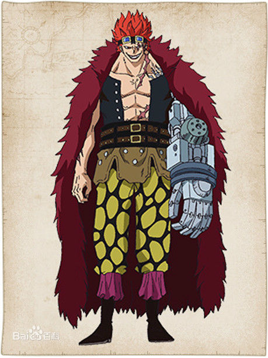
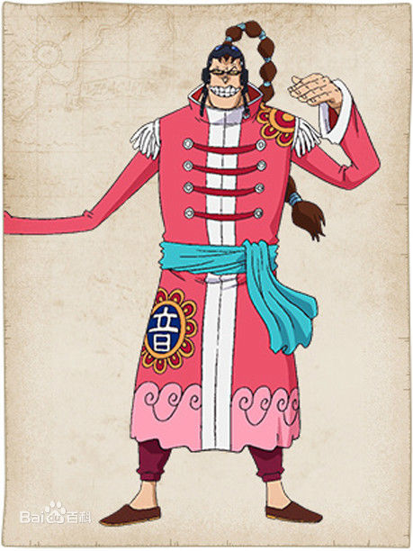
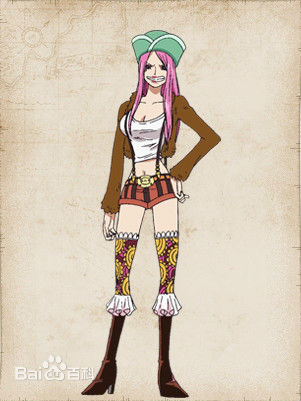
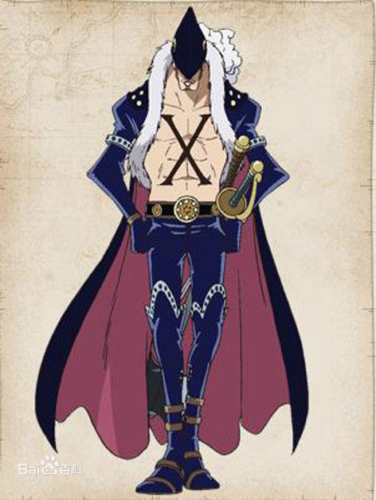
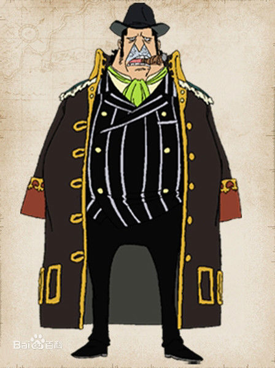

最恶世代成员介绍

名字：蒙奇·D·路飞
海贼团: 草帽海贼团
恶魔果实能力: 橡胶果实
生平：草帽海贼团船长，草帽大船团船长，草帽海贼团三巨头之首，11位超新星之一，极恶的世代之一，五位海上皇帝“五皇”之一。
详情：来自百度百科

名字：特拉法尔加·罗
海贼团: 红心海贼团
恶魔果实能力: 手术果实
生平：头戴有斑点状图案的毛帽，眼圈很深，手臂到手背都有特殊图案的刺青，下巴蓄著一小撮胡子，性格冷静，恶魔果实能力者，可以在自己制造的[Room]范围里进行空间转换，将物体在他控制的空间中交换与分离的能力，被分离的人不会死，曾把多名海军分尸(既不死、不痛、不流血)，重新乱组装，喜称其它船长和首领作“XXX当家的”。大事件后救走濒临死亡的路飞和重伤状态的甚平，并为他们治疗。在雷利到达九蛇岛后离开。在庞克哈萨德与草帽海贼团联盟，后在藤虎面前主动放弃“王下七武海”的称号。
详情：来自百度百科

名字：尤斯塔斯·基德
海贼团: 基德海贼团
恶魔果实能力: 磁铁果实
生平：南海出身的海贼，主要特征是红发刺猬头，胸前佩带着一把匕首和一把手枪，头戴护目镜、穿着暗红色大衣，实力强大却性格残忍。是个兼具理想与野心的人，
常为一点小事而发火，没有路飞那种容人的器量。曾说过他把嘲笑过他要去找到“ONE
PIECE”的人都给杀了，连基拉都希望他能稍微收敛一下那火爆脾气，由于他的行为让民间蒙受灾害，被夏姨称为“很不可爱的孩子”，他的船员以“老大”来称呼他。而且，他是恶魔果实能力者，能吸引或排斥（反射）钢铁制的金属物，可以变成不同形状的武器。
详情：来自百度百科

名字：斯库拉奇曼·阿普
海贼团: 广播海贼团
恶魔果实能力: 音乐果实
生平：悬赏金额在香波第诸岛排行第6名，伟大航路出生，长手族。一身中国装束，上面绣著一个"音"字，能力者，可以使出音波破坏人并使其爆炸，船员以“先生”来称呼他。
详情：来自百度百科
名字：巴兹尔·霍金斯
海贼团: 霍金斯海贼团
恶魔果实能力: 稻草果实
生平：霍金斯是登陆香波地群岛的超新星之一，当时悬赏金2亿4900万贝里，在超新星中排行第三，仅次于基德和路飞。两年后悬赏金是3亿2000万贝里，在庞克哈萨德篇与基德和阿普结为海贼同盟。
详情：来自百度百科
名字：罗罗诺亚·索隆
海贼团: 草帽海贼团
恶魔果实能力: 无
生平：草帽海贼团剑士。草帽海贼团三巨头之一，11位超新星的其中一人，悬赏金额在香波第诸岛排行第10名，双手持刀，加上口咬着一把刀的“三刀流”剑士。佩刀为和道一文字、三代鬼彻、黑刀秋水，特征是绿色短发、深绿色头巾、绿色腰封和左耳配戴了三个耳环。有能斩出斩击般的强劲臂力。是一个路痴。立志成为世界上最强的剑豪。
详情：来自百度百科

名字：乔艾莉·波妮
海贼团: 波妮海贼团船
恶魔果实能力: 年龄果实
生平：正如她的称号一样，是个女大胃王，手上食物从没断过，食量跟路飞有得比。能力者，可以将人变老或年轻，曾把几名海军变成老人或小孩。认为罗罗诺亚·索隆是一个有勇无谋的笨蛋，但在香波底群岛罗罗诺亚·索隆想砍死天龙人的时候将其扑倒制造索隆已经死了的假象，算是救了索隆一命。草帽海贼团引发天龙人事件后，她扬言哪天如果在新世界碰面，一定要干掉他们。
在新世界看到白胡子战死时流下眼泪，在漫画595话想为白胡子报仇时被黑胡子俘虏了，赤犬追了上来，黑胡子把她留下，已经被海军抓走。海贼王漫画700话《诡计》中出现，暂不知如何逃离（世界政府）海军本部赤犬的手中。
详情：来自百度百科
名字：基拉
海贼团: 基德海贼团
恶魔果实能力: 无
生平：基德海贼团的战斗员，极恶的世代之一，集结香波地群岛的十一超新星之一，外号"杀戮武士"，两年前的悬赏金1.62亿贝里，两年后涨到2亿贝里 。基拉曾说过，基德答应他所有的剑客都要交由他解决。
详情：来自百度百科

名字：X·德雷克
海贼团: 德雷克海贼团
恶魔果实能力: “龙龙果实”异特龙形态
生平：原本是海军本部少将，所以被人称为“堕落海军”，下巴和胸口都有“X”的标记，会同时使用长剑和战棍的二刀流战术。与黄猿相识，曾一人挡住“杀戮武人”基拉跟“怪僧”乌尔基的攻击，名字的由来是黑暗（Darks）。在595话中，去到冬岛挑战凯多的手下。
详情：来自百度百科

名字：卡彭·贝基
海贼团: 火焰坦克火战车海贼团
恶魔果实能力: 系坚城果实
生平：火焰坦克海贼团船长，11位超新星的其中一人，西海出身，悬赏金3亿贝里。坚城果实能力者，船员以“教父”来称呼他。2年后加入BIG MOM麾下，后来和草帽一伙联合暗杀BIG
MOM失败而被BIG MOM海贼团追杀。
详情：来自百度百科